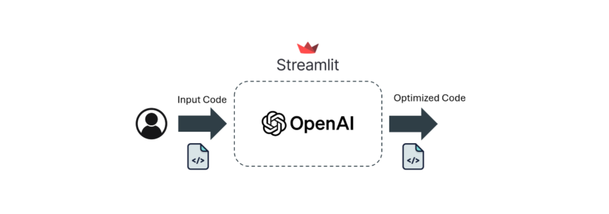

Code Reviewer Agent
1. Problem Definition / Objective
The goal is to develop a Code Reviewer Agent that reviews, detects errors, corrects, and optimizes the code provided by the user. The input can be either by uploading a file containing the code (e.g., .sql, .py, etc.) or by copying and pasting the code directly into the app.
2. Solution Development
The solution architecture consists of a Streamlit app that connects to the LLM through the OpenAI API. The input is the user’s code, and the output is a series of comments about the code along with a corrected and optimized version of it.
3. Tools and Technologies
- Python
- OpenAI API
- Streamlit
- LMM
4. Deployment
The application runs on a virtual machine and is available company-wide via VPN.